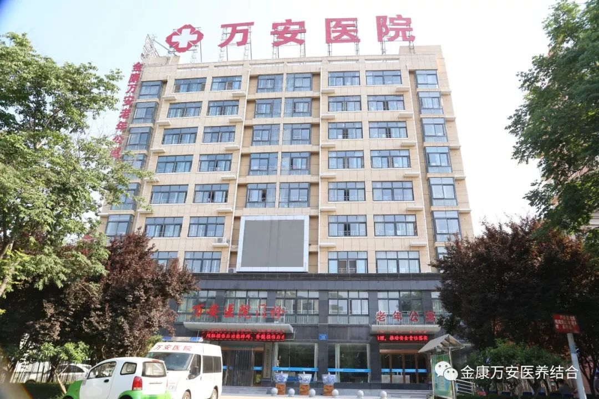
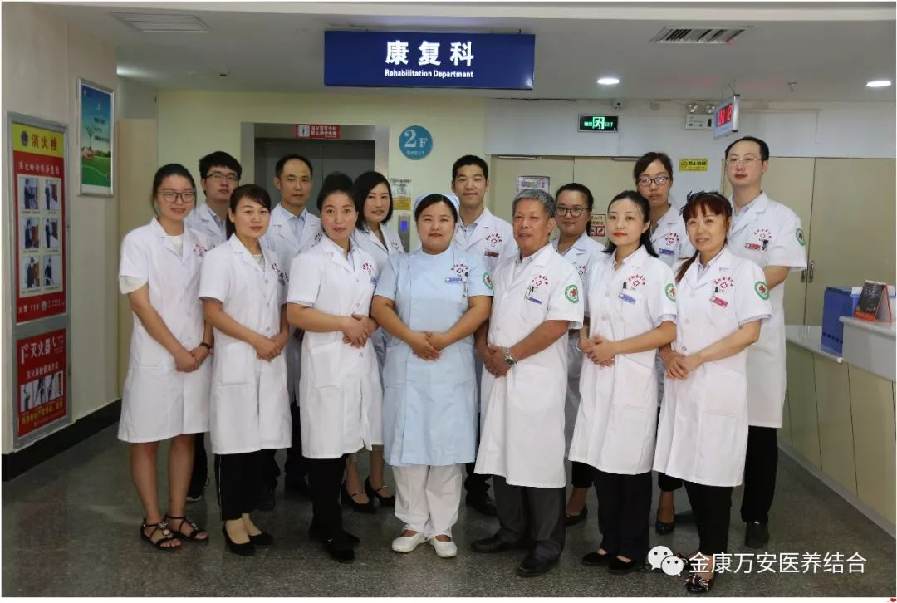
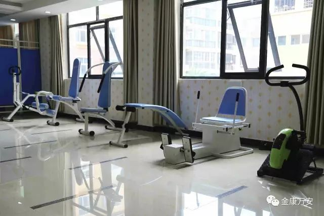
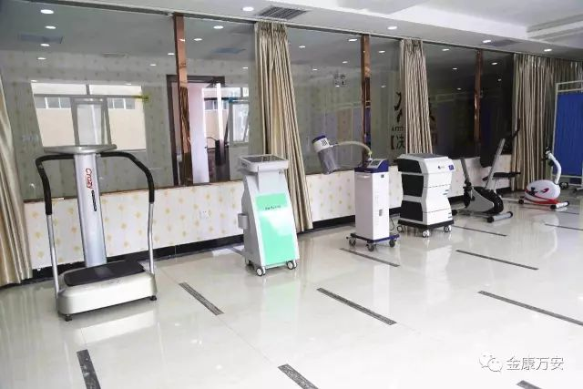
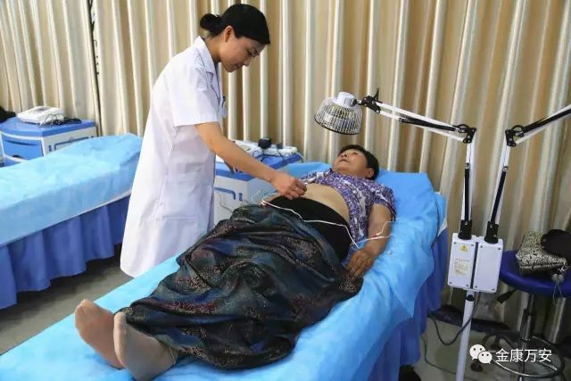
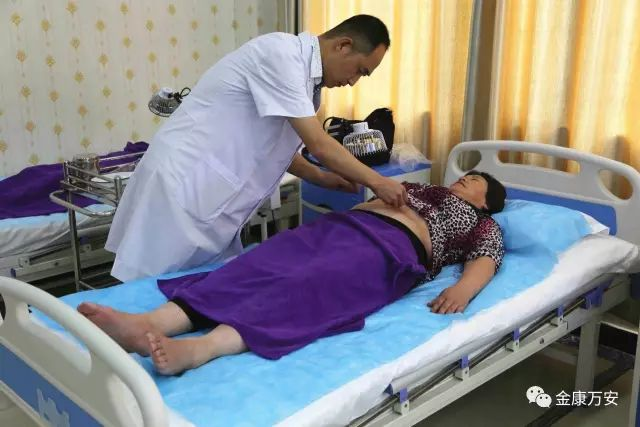
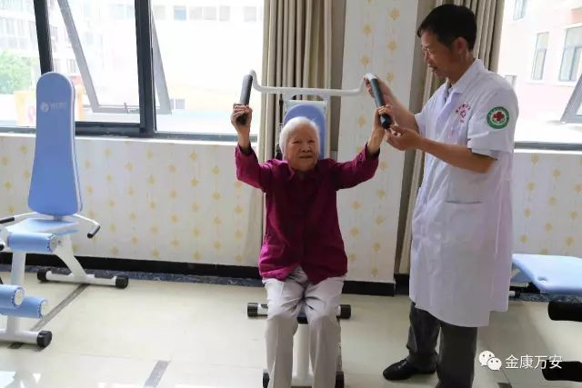
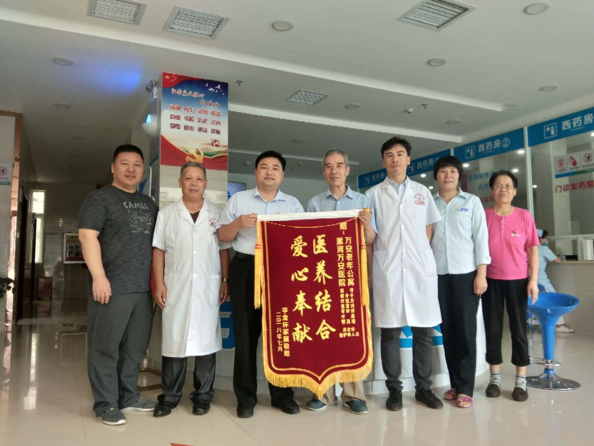
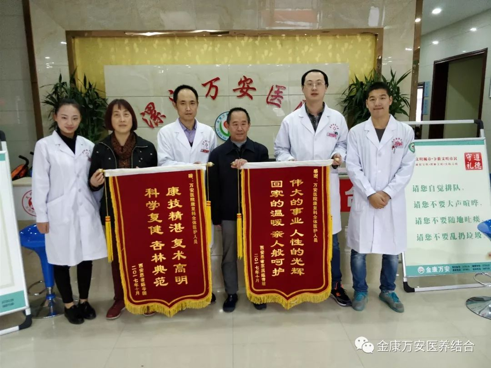
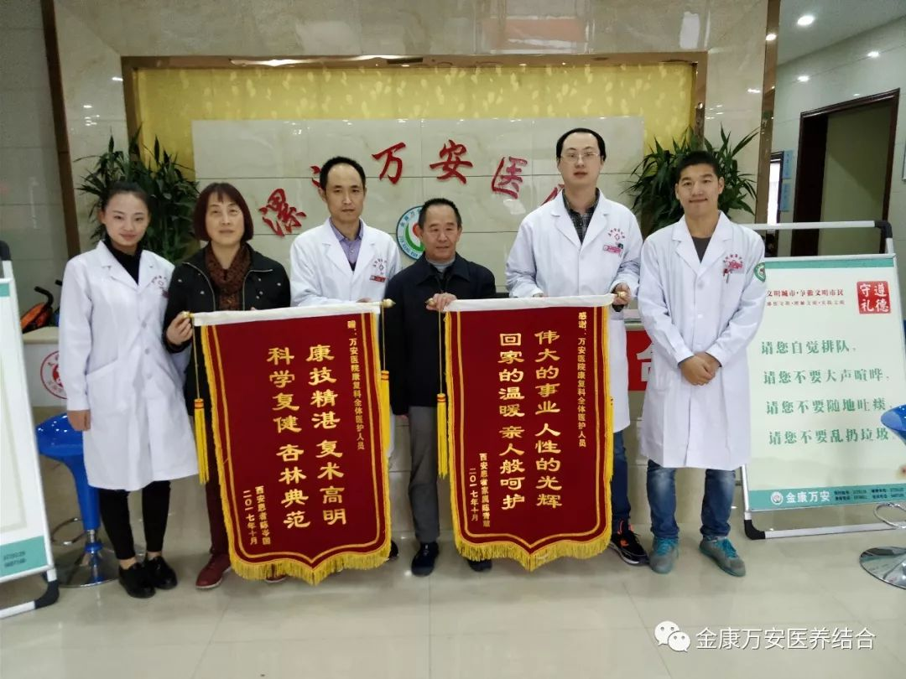

漯河万安康复医院 -- 康复科
随着漯河医养结合事业的发展和社会养老需求的不断增加，漯河金康护理院于2015年3月成功兼并漯河万安康复医院，新组建的漯河万安康复医院位于风景秀丽的沙澧河风景区长江路中段13号，比邻漯河大学北门斜对面，西邻107国道及漯河高铁西站，十分钟即可达市中心商业圈，交通便利。
漯河万安康复医院占地总面积4600平方米，总建筑面积11000平方米，目前设有床位120张，职工169人，其中专业技术人员132人，医院开设有：内科、外科、妇科、中医科、康复科、医学检验科、医学影像科、超声诊断专业等科室。 拥有飞利浦16排CT、普利德PLD5600全自动胃肠造影DR一体机、全数字彩色多普勒超声诊断仪、心电工作站、动态心电监护仪、动态血压监护仪、彩超、微波治疗仪、心电监护仪、全自动生化分析仪、美国LEEP刀、数码阴道镜、经颅多普勒血流分析仪、高频治疗仪、免疫三氧治疗仪、红外乳腺诊断仪、智能数码多功能治疗仪等先进医疗设备。
漯河万安康复医院将以科技为先导、人才为基础、服务为根本、尊老爱老为理念。加大老年病、心脑血管病、康复理疗、妇科、体检等专科建设力度。依托养老产业，发展大专科小综合的运营模式。是国家二级康复及老年病专科医院，为漯河市及三区城镇职工、居民医疗保险和新型农村合作医疗定点医疗机构。
康复科介绍
漯河万安康复医院康复科现有医护团队15人。其中副主任医师1名，主治医师2名，康复师3名，均在国内康复医学科进修培训，具有丰富的临床经验。康复科设有门诊部，住院部，其中门诊面积达500平方米，设有针灸推拿治疗室，中药熏蒸治疗室，PT运动治疗室、OT作业治疗室、容大五行颈腰椎综合治疗室、物理因子治疗室。病区面积800平方米，设置床位30张，全区治疗环境温馨舒适。
专业的康复队伍
一流的康复设备
 主要开展
主要开展：
对偏瘫康复、截瘫康复、面瘫康复、吞咽语言康复、颅脑损伤后功能障碍、脊髓损伤后功能障碍、骨关节功能障碍、疼痛康复、颈肩腰腿痛及骨折等患者进行康复治疗和功能训练，以及应用小儿推拿手法治疗儿童呼吸系统、消化系统等疾病。
精湛的康复技术
  感恩锦旗
 
